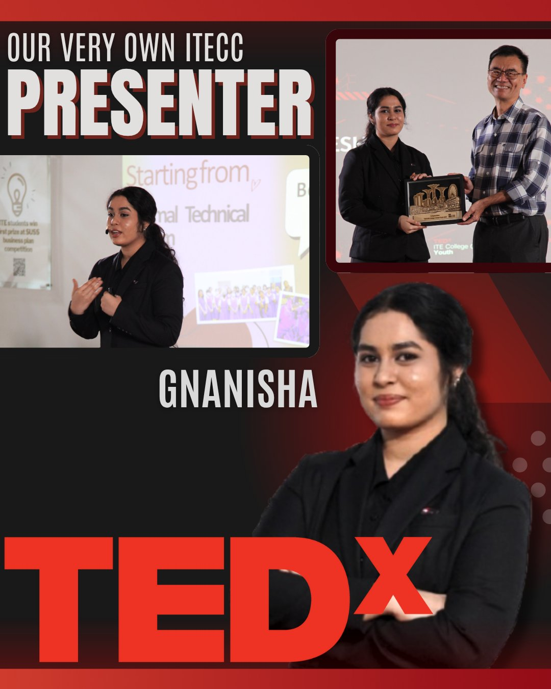
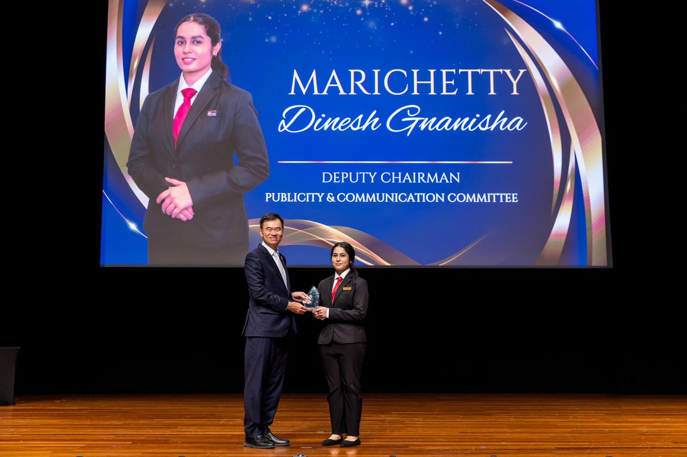
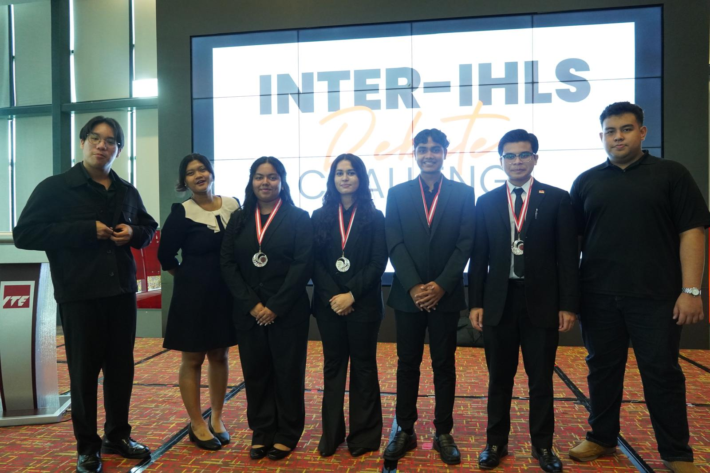
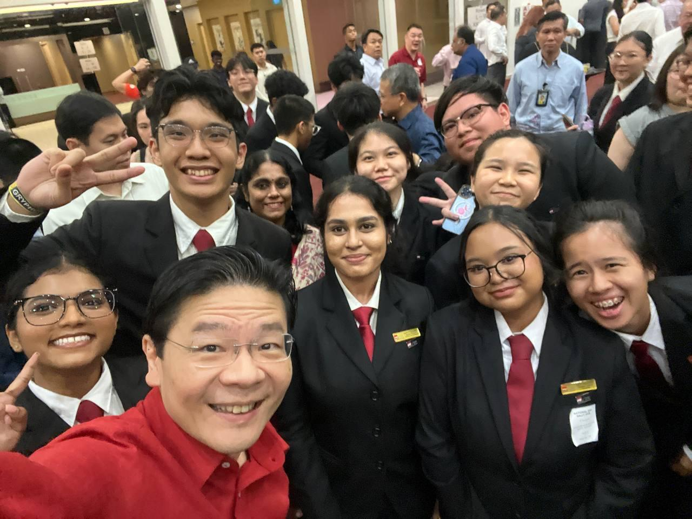

Moments
In Action

TEDxITE College Central Youth Presenter · 2025

Student Council Investiture · 2025

Representing ITE College Central and OnePeople.sg

INTER-IHL Debate Challenge · 2025

Assisting with the National Day Rally · 2025